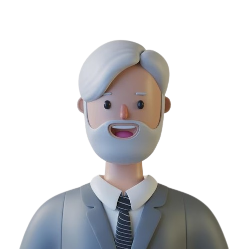
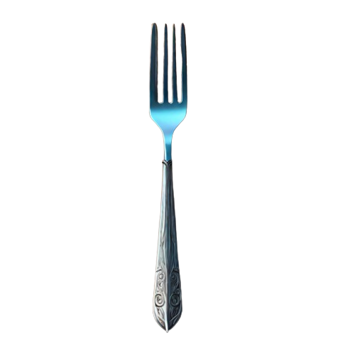

Demo of Solutions to the deadlock:
1.Resource Hierarchy Solution:
(Odd-Even Method)
(Odd-Even Method)
We resolve the deadlock while using the Resource Hierarchy Solution by instructing even-numbered Philosophers (2 and 4) to pick up the Fork to their left, while odd-numbered Philosophers (1, 3, and 5) pick up the Fork to their right. Let's revisit the previous scenario where all Philosophers transition from the thinking to the eating state simultaneously. Since only one Philosopher can use a single Fork at a time, when Philosopher 1 and 2 both aim for the same Fork (Fork 2), Philosopher 2 reverts to the thinking stage. The same occurs for Philosopher 3 and 4.
Now Philosopher 4 and 5 again aim for the same Fork (Fork 1), resulting in Philosopher 4 reverting to the thinking stage while Philosopher 5 can eat since he has obtained both Forks. Upon finishing his meal, he returns the Fork, allowing the other Philosopher to continue eating.
2. Solution to the Deadlock with Semaphores

1

2

3

4

5

1
2
3
4
5
Dining Philosophers Table
| Philosopher | Status | Spoon | Spoon Status |
|---|
Semaphores can be used to solve the dining philosophers problem by representing the chopsticks as semaphores. Before a philosopher picks up a chopstick, they must acquire the corresponding semaphore (using wait). If the semaphore is not available, they wait until it becomes available. Once they finish using the chopstick, they release it (using signal).